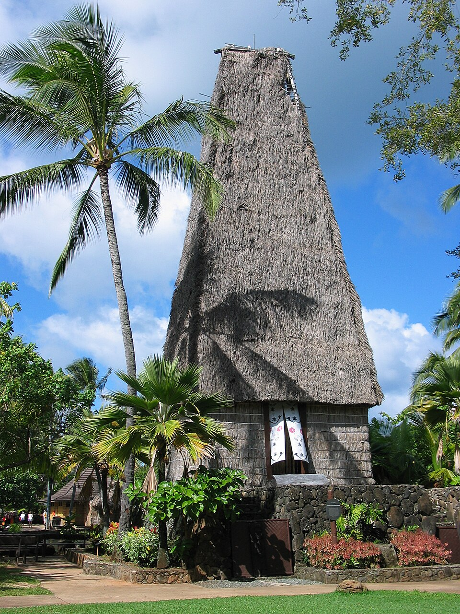

Spirit Temple
This page features the Spirit Temple destination in my Fiji photo tour. The location can be explored through photographs and information about its surroundings and significance. Learning about places like this can help visitors appreciate the variety of sites found in Fiji.
